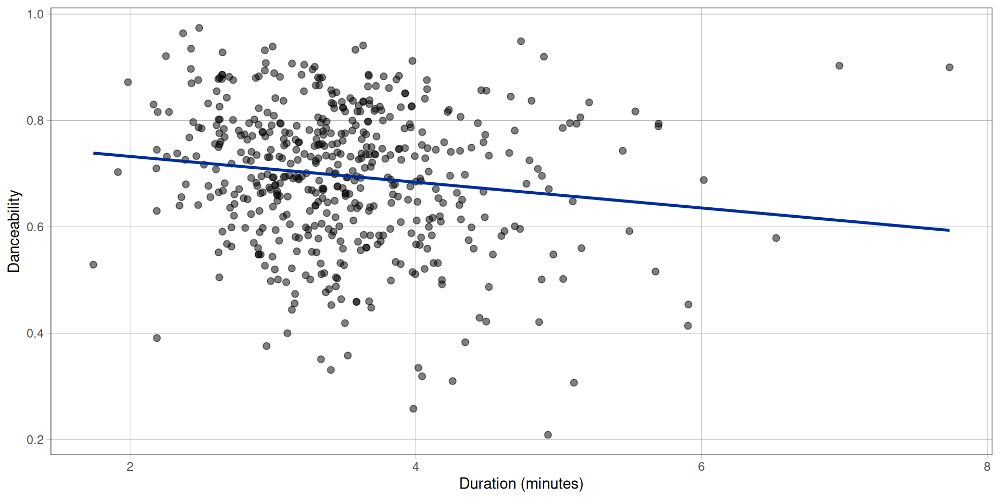
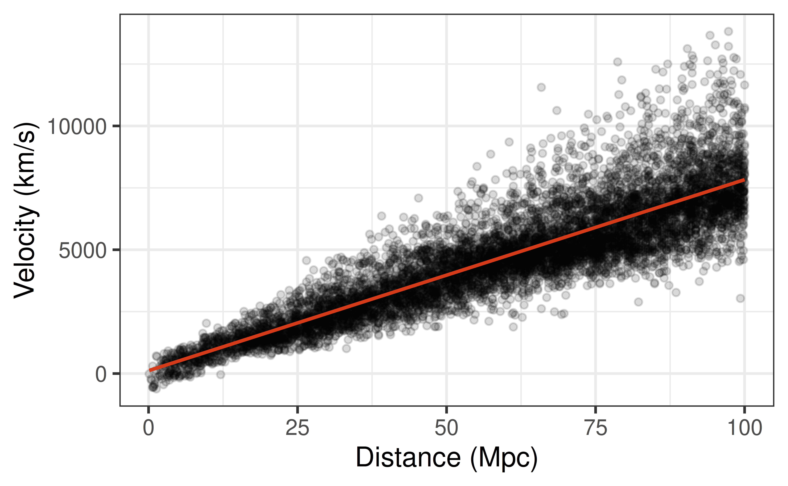
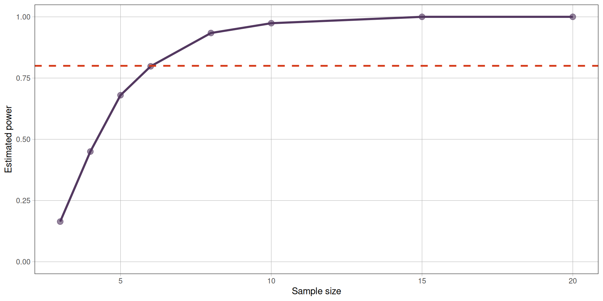
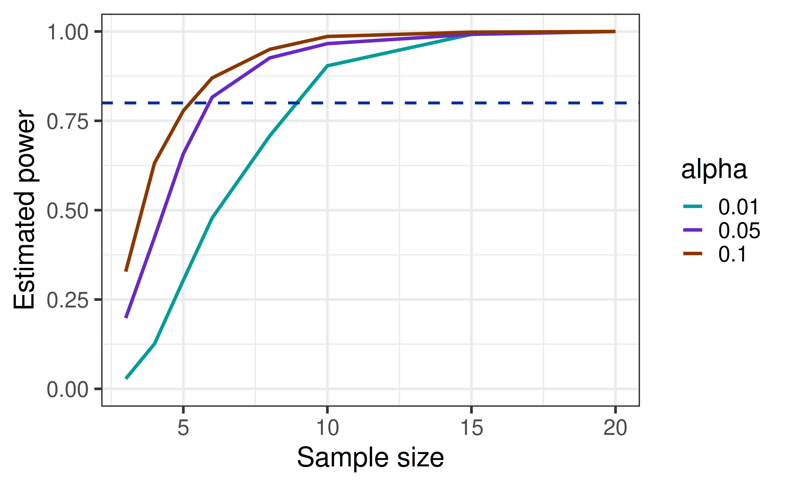
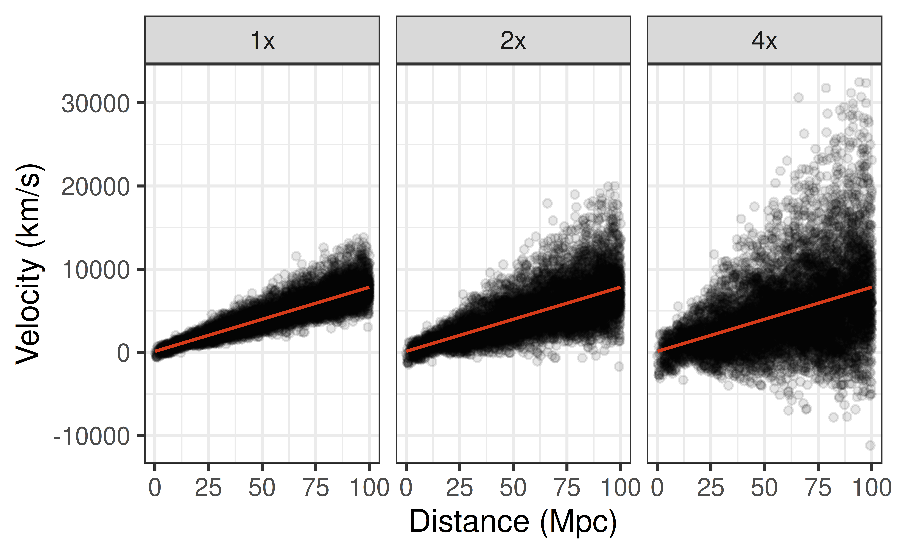
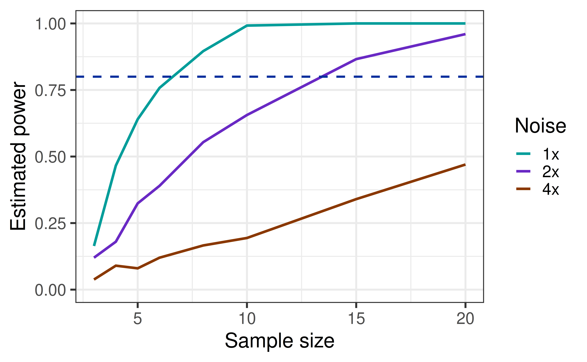
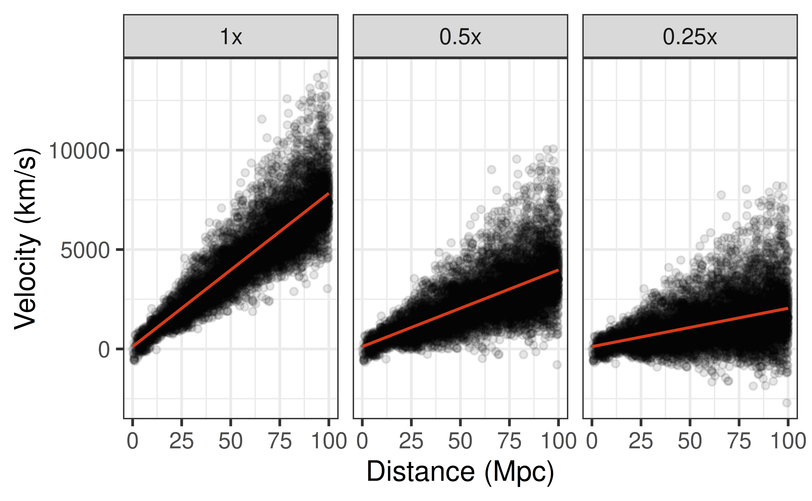
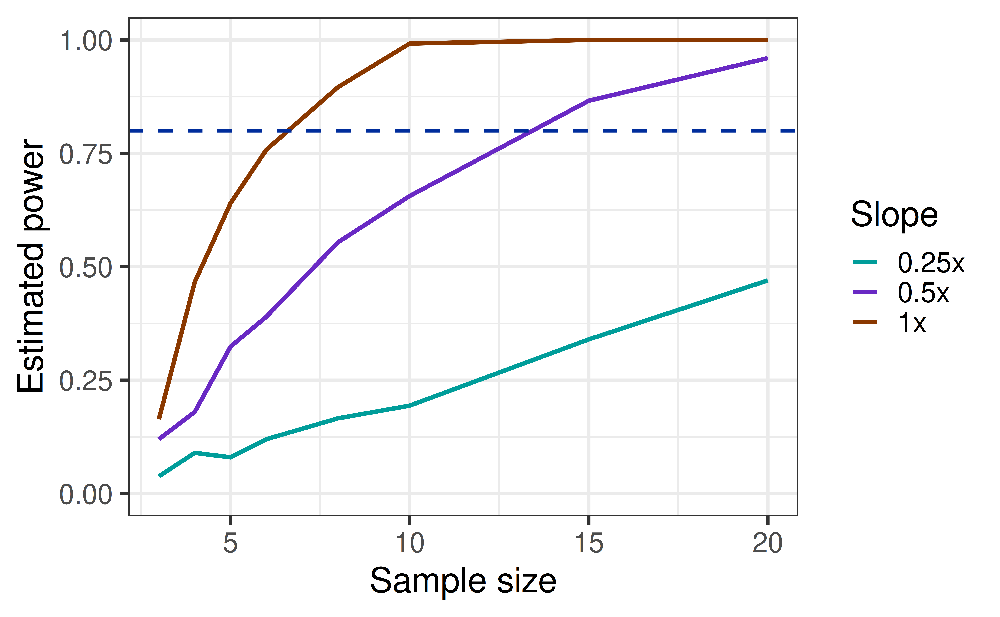
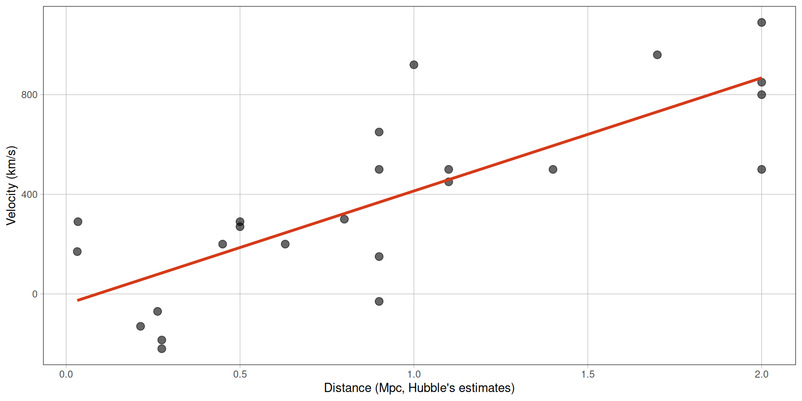
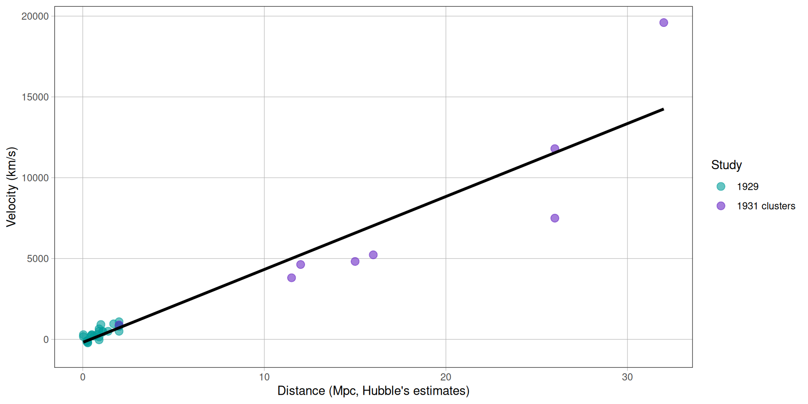

| term | estimate | std.error | statistic | p.value |
|---|---|---|---|---|
| (Intercept) | 0.7809 | 0.0275 | 28.3506 | 0.0000 |
| duration_min | -0.0242 | 0.0077 | -3.1510 | 0.0017 |
Decisions, Errors, and Power
Could we have seen it?
Prof. Eric Friedlander
Where we are
Last week was Exam 1, so we never finished the activity from Lecture 11. Today:
- A quick refresher on testing the slope.
- Time to finish AE 11.
- Decisions and errors: what can go wrong when we test?
- Power: how likely are we to detect a relationship that really exists? We will explore it with the expansion of the universe.
Refresher: testing a slope
The setup
We have data on 508 of the most popular songs on Spotify. Does a song’s duration help predict its danceability?

The five steps
- Choose a statistic that captures the question: the slope \(\hat{\beta}_1\).
- Hypotheses: \(H_0: \beta_1 = 0\) (no linear relationship) vs. \(H_A: \beta_1 \neq 0\).
- Null distribution: what slopes do we get if there is no relationship? We built it by shuffling. It is normal, centered at 0, with spread \(SE_{\hat{\beta}_1}\).
- Standardize: \(t = \dfrac{\hat{\beta}_1 - 0}{SE_{\hat{\beta}_1}}\), compared to a \(t\) distribution with \(n - 2\) degrees of freedom.
- Conclude: the p-value is the probability of a statistic at least this extreme if \(H_0\) is true.
In R
- What is the test statistic for the slope? What does it mean in words?
- What is the p-value, and what is your conclusion in context?
Activity
- Get back into your groups and use the same predictor you were assigned and finish the Activity.
- We will pick back up at the countdown. Keep your AE 11 model, because we will use it again.
Decisions and errors
From a p-value to a decision
So far we have reported a p-value. Often a test ends with a decision.
- Choose a significance level \(\alpha\) ahead of time (usually \(0.05\)).
- If p-value \(< \alpha\): reject \(H_0\). The data provide convincing evidence for \(H_A\).
- If p-value \(\geq \alpha\): fail to reject \(H_0\). The data do not provide convincing evidence for \(H_A\).
- We never “accept” \(H_0\). Courtroom: \(H_0\) is “innocent,” and “not guilty” is not the same as “innocent.”
For the duration model, the p-value is 0.0017. With \(\alpha = 0.05\), what is our decision?
Nothing magical happens at \(\alpha\)
- A p-value of \(0.049\) and a p-value of \(0.051\) are essentially the same amount of evidence, yet they lead to opposite “decisions.”
- \(0.05\) is a convention, not a law of nature.
- Evidence is a continuum. Report the p-value, the estimate, and a confidence interval, not just “significant” or “not significant.”
So why bother with decisions at all? Because they let us ask: how often will we be wrong?
What can happen?
What are the four possible outcomes of a test?
| Reject \(H_0\) | Fail to reject \(H_0\) | |
|---|---|---|
| \(H_0\) is true (no relationship) | Type I error (false positive) | Correct |
| \(H_0\) is false (real relationship) | Correct | Type II error (false negative) |
Types of error
- Type I error: rejecting \(H_0\) when it is true. \(P(\text{Type I}) = \alpha\), so we choose how often this happens.
- Type II error: failing to reject \(H_0\) when it is false. \(P(\text{Type II})\) is harder to control: it depends on how big the real effect is, how much data we have, and how noisy the data are.
- Trade-off: lowering \(\alpha\) makes Type I errors rarer but Type II errors more common.
In a courtroom, which error is worse: convicting an innocent person or acquitting a guilty one? Is the same error always worse in science? Think about screening for a disease vs. approving a new drug.
Power
Statistical power
The bottom-left cell of our table is the one we usually want. Power is the probability that a test correctly rejects \(H_0\) when there really is an effect of a given size: \(\text{power} = 1 - P(\text{Type II error})\).
What do you think the power of a test depends on?
- Sample size: more data means more power
- Significance level \(\alpha\): a more lenient \(\alpha\) means more power (and more false positives)
- Variability in the data: less noise means more power
- Size of the slope: a steeper relationship is easier to detect
- The true value of \(\beta_1\)
An expanding universe
What we know now
We now know that the universe is expanding: galaxies move away from us, and farther galaxies move away faster. There is a linear relationship between a galaxy’s distance and its recession velocity:
\[v = C \, d\]
- \(v\): recession velocity (km/s)
- \(d\): distance (megaparsecs, Mpc, where 1 Mpc \(\approx\) 3.26 million light years)
- \(C\): the Hubble constant, about 70 km/s per Mpc
In regression language, what is \(C\)? What would the intercept be?
What are these units?
Distance: the megaparsec (Mpc). Astronomical distances are enormous, so astronomers use big units.
- 1 parsec \(\approx\) 3.26 light years, so 1 Mpc (a million parsecs) \(\approx\) 3.26 million light years.
- Andromeda, our nearest large neighbor, is about 0.8 Mpc away. The Virgo Cluster is about 16 Mpc away.
Recession velocity (km/s). Light from a galaxy that is moving away from us is stretched to longer, redder wavelengths (redshift). The more the light is shifted, the faster the galaxy is receding. So we can measure a galaxy’s velocity directly from its light, even though we cannot measure its distance directly.
- Positive velocity: moving away from us. Negative: moving toward us.
- For scale, a galaxy at 100 Mpc recedes at roughly 7,000 km/s, about 25 million km/h.
So \(C \approx 70\) km/s per Mpc means: for every additional 3.26 million light years of distance, a galaxy recedes about 70 km/s faster.
Our population: Cosmicflows-4
Cosmicflows-4 (Tully et al., 2023) is a modern catalog of distances and velocities of galaxies. We will use the 8,514 galaxy groups within 100 Mpc as our population.

| term | estimate | std.error | statistic | p.value |
|---|---|---|---|---|
| (Intercept) | 117.71 | 30.47 | 3.86 | 0 |
| distance_mpc | 77.14 | 0.47 | 165.68 | 0 |
With 8,514 groups, the slope is about 77 km/s per Mpc, our population’s version of \(C\). Nobody doubts this relationship.
Back in the 1920s
It was not always obvious. In the early 1920s, most astronomers thought the Milky Way was the whole universe, and that the universe was static.
- 1912-1917: Vesto Slipher measures the velocities of spiral “nebulae.” Most are moving away from us.
- 1924: Edwin Hubble uses Cepheid stars to show that Andromeda is far outside the Milky Way: it is another galaxy.
- 1927: Georges Lemaitre predicts, from general relativity, that the universe is expanding.
- 1929: Hubble publishes distances and velocities for 24 nebulae, measured with the 100-inch telescope at Mount Wilson.
- 1931: Hubble and Milton Humason add distant galaxy clusters, 15 times farther away.
Hubble the telescope
- The Hubble Space Telescope, launched in 1990, is named after him.
- One of its main goals was to pin down \(C\). Its Key Project (2001) found \(C = 72 \pm 8\) km/s per Mpc.
- Today astronomers still argue about the exact value (the “Hubble tension”), but not about whether the relationship exists.
Before Hubble ever pointed his telescope, he had to decide how many galaxies to measure. How many would be enough to detect the relationship if it exists? That is a question about power.
Simulating power
Sampling from the population
We will treat Cosmicflows-4 as the population and take samples of galaxy groups, like an astronomer with a small telescope. Here is one sample of n = 5:
| term | estimate | std.error | statistic | p.value |
|---|---|---|---|---|
| (Intercept) | 1361.889 | 984.372 | 1.384 | 0.26 |
| distance_mpc | 62.534 | 16.030 | 3.901 | 0.03 |
Did this sample detect the relationship at \(\alpha = 0.05\)?
Another sample
| term | estimate | std.error | statistic | p.value |
|---|---|---|---|---|
| (Intercept) | -281.439 | 731.550 | -0.385 | 0.726 |
| distance_mpc | 79.119 | 9.921 | 7.975 | 0.004 |
How do the estimate and p-value differ from the previous sample? Did both samples detect the relationship?
Ten samples
# A tibble: 10 × 7
term estimate std.error statistic p.value .row .index
<chr> <dbl> <dbl> <dbl> <dbl> <int> <dbl>
1 distance_mpc 151. 22.3 6.75 0.00664 1 1
2 distance_mpc 82.2 46.2 1.78 0.173 1 2
3 distance_mpc 73.1 10.9 6.71 0.00675 1 3
4 distance_mpc 89.6 21.6 4.15 0.0255 1 4
5 distance_mpc 202. 99.2 2.04 0.135 1 5
6 distance_mpc 112. 31.7 3.55 0.0380 1 6
7 distance_mpc 154. 60.8 2.54 0.0848 1 7
8 distance_mpc 109. 35.2 3.09 0.0535 1 8
9 distance_mpc 108. 10.4 10.4 0.00191 1 9
10 distance_mpc 70.6 13.7 5.14 0.0143 1 10In how many of these 10 samples was the p-value below 0.05?
One thousand samples
(p.value < 0.05)
TRUE FALSE
0.665 0.335 With 5 galaxy groups, we would detect the relationship about 66% of the time. That is the power of the test when \(n = 5\).
Sample size

More data, more power. The dashed line marks the common target of 80% power.
Significance level

What do we give up in exchange for the extra power of a larger \(\alpha\)?
Variability
What if peculiar motions made galaxies scatter more around the line? We can build that population: keep the fitted line, but multiply the residuals by 1, 2, or 4.

Variability and power

More scatter, less power.
Size of the slope
Now imagine a universe that expands more slowly: keep the same scatter, but multiply the slope by 1, 0.5, or 0.25.

Size of the slope and power

Compare this plot to the variability plot. What do you notice? Why might halving the slope and doubling the noise do the same thing?
(Hold that thought. Next time we will give it a name: effect size.)
What drives power?
| To get more power… | Because… |
|---|---|
| Increase the sample size | Less sampling variability in the slope |
| Increase \(\alpha\) | Easier to reject, but more Type I errors |
| Reduce the variability | The signal stands out from the noise |
| Look for a steeper slope | The signal is bigger |
\[ SE_{\hat{\beta}_1} = \frac{\hat{\sigma}_\epsilon}{\sqrt{(n-1)s_X^2}}, \qquad \hat{\sigma}_\epsilon = \sqrt{\frac{\sum_{i=1}^n (y_i - \hat{y}_i)^2}{n-2}} \] ## What was the power of Hubble’s original study?
- Need some assumptions first
| We choose | We must assume |
|---|---|
| Significance level \(\alpha\) | The true slope \(\beta_1\): how fast does the universe expand? |
| Sample size \(n\) | The noise \(\sigma\): how much do galaxies scatter around the line? |
- Complete Parts 1 and 2 (Exercises 1-4).
In Hubble’s shoes
It is the 1920s and you are Edwin Hubble. Every point on the plot costs you enormous effort:
- Each velocity needs a spectrum of a faint galaxy, photographed through the 100-inch telescope at Mount Wilson, then the largest in the world.
- Exposures take many hours, often over several nights, and telescope time is scarce.
- Distances are even harder: you must find and measure individual stars in each galaxy.
- The 100-inch telescope Edwin Hubble used cost $500,000 in 1917 which is about $13M today. . . .
Before spending years collecting data, we want to make sure that we can detect the effect if it exists.
What would you need to know, or assume, to figure out how many galaxies to measure?
Power analysis
A power analysis is done before collecting data:
- Decide on the smallest relationship you would care about (this is a judgment about practical significance, not a statistics question).
- Choose a target power, often 80%. Trade off the cost of a Type II error against the cost of more data.
- Use simulation (or a formula) to find the sample size that achieves it.
- Collect that much data.
Caution
Power computed from the effect you already observed only tells you how your study behaved. It is not a guarantee about a future study, because the observed effect is itself a noisy estimate.
What should we assume?
| We choose | We must assume |
|---|---|
| Significance level \(\alpha\) | The true slope \(\beta_1\): how fast does the universe expand? |
| Target power | The noise \(\sigma\): how much do galaxies scatter around the line? |
- Significance level: \(\alpha = 0.05\).
- Noise: galaxies have their own motions, about 150 to 200 km/s, plus measurement error on photographic spectra, about 40 km/s. Together, \(\sigma \approx 175\) km/s.
- Reach: the telescope can reach galaxies out to 2 Mpc, spread evenly.
What about slope?
This is the hard one. We need a principled guess, and we will consider three (in Hubble’s 1920s distance units):
| Prior | Slope (km/s per Mpc) | Where it comes from |
|---|---|---|
| Optimistic | 575 | Lemaitre’s 1927 estimate, from Slipher’s velocities and early distances |
| Plausible | 450 | Slipher’s average unexplained recession of the nebulae |
| Conservative | 100 | A smaller slope, of the same order as Slipher’s and Lemaitre’s estimates, but reduced in case they were over-estimates |
Activity
- Continue with Part 3: choose a slope from the priors above and see how much your assumptions matter.
- Choose your own target power, then find the sample size you would need.
- Finished early? Analyze Hubble’s real data (Part 4).
Hubble’s actual data
Hubble’s 1929 data

| term | estimate | std.error | statistic | p.value |
|---|---|---|---|---|
| (Intercept) | -40.784 | 83.439 | -0.489 | 0.63 |
| distance_mpc | 454.158 | 75.237 | 6.036 | 0.00 |
Hubble’s slope is about 454 km/s per Mpc, roughly 6 times today’s value. His distances were too small (he did not know about two types of Cepheids). But a relationship was there to see: right in the range of our priors.
Hubble and Humason’s 1931 data

Recap
- A test ends in a decision: reject or fail to reject \(H_0\). But evidence is a continuum, and nothing magical happens at \(\alpha\).
- Four outcomes: a Type I error (probability \(\alpha\)), a Type II error, and two correct decisions.
- Power is the probability of detecting a real relationship: \(1 - P(\text{Type II error})\).
- Power increases with sample size, \(\alpha\), less variability, and a steeper slope.
- A power analysis before collecting data: assume a slope and noise, choose a target power, and find the sample size you need.
- Next time: how big is a relationship, not just whether we can detect it?